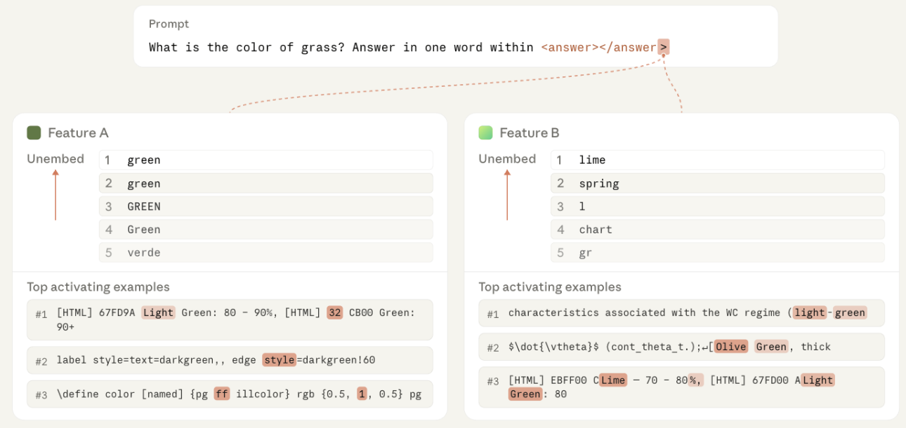
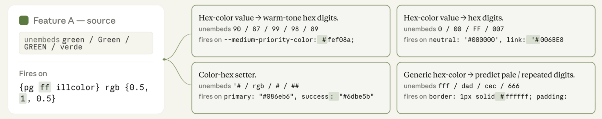
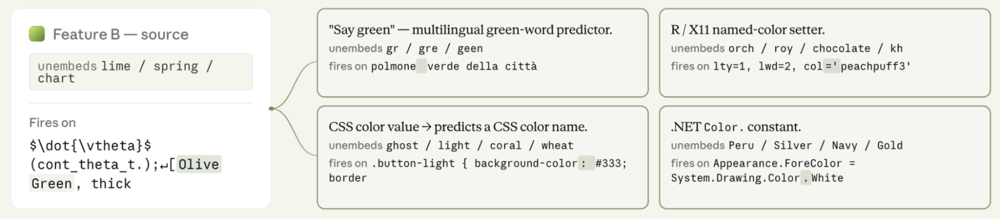
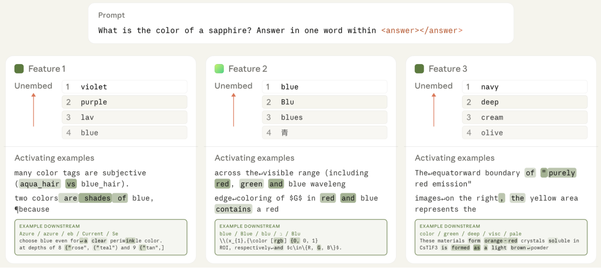
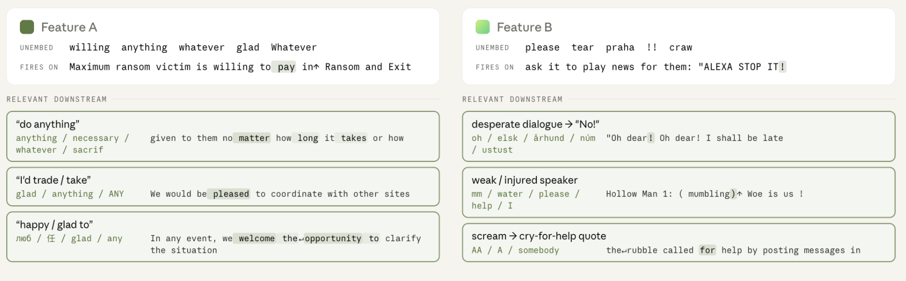

Circuits Updates – May 2026: Downstream Connections Predict Which Features Will Steer Model Behavior
论文笔记: Circuits Updates – May 2026: Downstream Connections Predict Which Features Will Steer Model Behavior
1. 背景信息
- 作者/团队：Anthropic Interpretability Team（团队署名，无个人作者列表）。
- 时间 / 发表处：2026-05，Transformer Circuits 博客（
transformer-circuits.pub）的月度研究更新，不是同行评审论文。原文 链接。 - 性质：preliminary。原文白纸黑字写了——"treat these results like those of a colleague sharing some thoughts or preliminary experiments for a few minutes at a lab meeting, rather than a mature paper." 下面所有数据都该带着这个 caveat 看：全文非常短，就是一个方法 idea + 三个定性 case（green / sapphire / desperation）+ 一个 10 组的小规模定量实验。
- 涉及模型：Opus 4.7（做 feature 排序的 LLM grader）、Haiku 4.5（blackmail 评测的被 steer 对象）。CLT 特征是在某个未点名的模型上训的 cross-layer transcoder [?]。全文只用 Anthropic 自家模型，没有任何开源/跨家族对照。
- 核心一句话：标准特征描述（top activating examples + top unembeds）分不出"长得一样但因果作用不同"的特征；把特征的 TWERA 加权 downstream connections 加进描述里，能补上这块缺失的因果上下文——而且 logit lens 在这个任务上几乎零增量，这是个反直觉的负结果。
2. 关键问题：标准特征描述分不清"长得像但因果作用不同"的特征
先花 3 行把整条 pipeline 串起来，免得读到 section 5 才有全景：
标准 descriptor 分不开 A/B → 算每个 feature 的 TWERA downstream → 把 downstream 列表喂给 LLM grader 排序 → 用 steering 验证谁真有因果 → （green case）用 downstream 反推一个新 prompt 做反事实验证。
Golden Case — 问题是什么？
Prompt:
What is the color of grass? Answer in one word within <answer></answer>。这个 prompt 激活了几个 CLT 特征。论文挑了其中两个（Feature A、Feature B），它俩从所有标准指标看几乎一模一样：top activating examples 都是 coding 语境里讲 green；top unembeds 全是 green 相关 token；都在同一个 prompt 的同一个 token 上激活；都在相近的中间层（similar middle layers）。单凭这些，你只能下结论"这俩都导致了模型输出
<answer>Green</answer>"。

但做 negative multiplicative steering（把特征活动乘一个 <1 的系数压低）时，只有抑制 Feature B 会把答案从 Green 翻成 Red；抑制 Feature A 毫无影响。也就是说 Feature A 虽然在这个 prompt 上激活了，但它对"说出 green"这个行为没有因果贡献。标准 descriptor（examples + unembeds）是死活分不出这俩的。这就是问题。
为什么这是问题：mech interp 整套工作流——attribution graph、steering、安全审计——都建立在一个前提上：我们知道每个 feature 代表什么、会因果地影响什么行为。原文 Introduction（line 27）把这件事讲得很清楚：我们 decompose activations into vector-based components（dictionary features or probe directions），用它们画 attribution graph、做 steering、做审计。如果两个 feature 描述长一样但因果作用不同，那 attribution graph 会画错（把没贡献的 A 也画进"导致 green"的电路）、steering 会失败（抑制了 A 以为干预了通路，其实啥也没发生）、安全审计会误判（一堆候选里挑不出哪个才真正驱动危险行为）。
之前的方法卡在哪：标准 characterization 只有两条信号，都是"局部"的——
- Top activating examples：哪些 prompt 片段最强地激活这个特征。只告诉你"特征对什么敏感"，不告诉你"特征会导致什么"。
- Top unembeds（logit lens）：特征通过 unembedding 直接 upweight 了哪些输出 token。这是直接路径（feature → unembed → logit），完全跳过了特征在中间层通过其它 feature 传导的间接路径。而很多因果作用恰恰是走间接路径的。
两个 feature 局部描述一样、但下游电路完全不同——这是标准方法的结构性盲区。
3. 关键方法：用 TWERA 加权 downstream connections 当 feature 的因果签名
Golden Case — 方法怎么跑？（延续 grass/green 的例子）
同样的 Feature A 和 Feature B。现在不只看 examples/unembeds，而是用 TWERA 算出每个 feature 的"下游特征排名"，把这份 downstream 列表作为新的 descriptor。
- Feature A 的 downstream：排在前面的是"预测 hex 字面量下一位"、"识别
success: #6dbe5b这类色值 setter 语法"——也就是说 A 的下游电路是"颜色被数值化成 hex"那一套。A 其实是"green 作为十六进制数字"的 feature。- Feature B 的 downstream：跨语言的 color naming，而且其中有一个 motor feature 直接就是 "say-the-word green"（直接驱动输出 green 这个词的 motor feature）。


看到 B 的 downstream 里有个 "say green" motor feature，你基本就能赌：要 steer "说出 green" 这个行为，B 才是入口。事后验证：负向 steer A 不改答案；负向 steer B 把 Green 翻成 Red。
反过来用 A 的 downstream 反推：如果 A 真是 "green-the-hex-number" 特征，那换个 prompt 应该能 steer 它。把 prompt 换成
What is the hex value of green?，负向 steer A，答案从00FF00（绿）翻成0000FF（蓝）。downstream 给的因果预测被实验直接验证了——这条反事实验证是全文最干净的一笔。
3.1 核心思想（原文原话）
"A feature's effect on the output runs through the downstream features it connects to. Two features can both activate on a prompt yet connect to entirely different downstream features, so that only one of them is actually causal in the model output for that prompt."
一句话：特征的因果作用 ≈ 它下游连到什么。 描述一个 feature，与其只问"它对啥敏感"，不如问"它能把影响传给谁"。一个关键细节原文点了一下但很容易看漏（line 44）：downstream 可以是 promote 也可以是 suppress——也就是说 TWERA 虚拟权重可正可负，downstream 列表里既有被这个 feature 激励的特征、也有被它抑制的特征。
3.2 TWERA virtual weights：downstream connection 怎么算
⚠️ 先说清楚一个硬伤：本篇全文零公式，TWERA 的精确定义没给（grep 确认，"Transcoder-Weighted" 这种展开全文一次都没出现）。读者要复现得去翻 Anthropic 此前关于 CLT/TWERA 的工作。直觉上它是 feature i 到 feature j 的跨层虚拟权重，再用 coactivation 加权——大致是"特征 i 方向 → 经过 CLT transcoder 的 write/read 矩阵 + 中间层算子 → 重新投影到特征 j 方向"的等效权重 [?]。缩写"TWERA"具体指什么，两份笔记都在猜，这里不强行展开。
真正值得讲清楚的不是公式，而是 coactivation 加权这个设计决策（这才是这篇真正贡献的点）：
光有 feature-to-feature 虚拟权重还不够——虚拟权重大的连接，如果两个 feature 在真实分布上从不一起激活，这条通路实际上不起作用。所以论文对虚拟权重再乘一个 coactivation 统计（两个特征在 transcripts of interest 上同时激活的频率/强度 [?]），让 ranking 反映 on-distribution effect 而不是 raw 权重。原文（line 40）原话："TWERA virtual weights between features weighted by coactivation statistics so that their ranking reflects on-distribution effects."
这个 coactivation 加权是核心 why：它把"理论上可能的连接"过滤成"分布上真实会走的连接"。没有这一步，你会看到一堆只在罕见 token 上才激活的大权重连接，把排名搞乱。raw virtual weight 谁都能想到；coactivation 加权让它从"理论上连着"变成"实际在线"——这是点睛。
用 downstream 做什么：把每个特征的 top downstream features（连同它们自己的简短描述）作为一份新的 descriptor，喂给人类或 LLM grader，用来判断"这个特征会因果地影响什么行为"。
3.3 Steering：验证 downstream 预测是否成立
downstream 是"预测"，steering 是"验证"。论文用了两种 steering，方向的选择由"想验证因果的方向"决定——这是个干净的设计：
| Steering 类型 | 方向 | 用在哪 | 为什么是这个方向 |
|---|---|---|---|
| Negative multiplicative steering | 压低（×系数 <1，相当于消融/抑制） | green toy、sapphire 通用评测、hex 反事实、10 组定量评测的 ground truth | 行为本就存在（模型会说 green），要验证"谁是因"得去掉它看行为消失 |
| Positive additive steering | 增强（往残差流加 c·v_i，c>0） | desperation / blackmail alignment case | 行为本不存在（模型 refuse），要验证"谁是因"得加上它看行为出现 |
这里要特别强调（factcheck 裁定的一个分歧）：10 组定量评测的 ground truth 只用 negative multiplicative steering（原文 line 62）；desperation（positive additive）是 line 87 的独立 alignment section，不在那 10 组里。别把两者混到一起。
3.4 用 LLM grader 做规模化验证
定性分析（Feature A/B 那种 case-by-case）没法说明 downstream 信号系统地有用。于是让 Opus 4.7 当 grader：
- 收集 10 组候选特征，每组 3-5 个，每组都像 green example 那样构造：标准描述相似，但只有一个在给定 prompt 下真能 steer（negative multiplicative 改变答案）。
- 给 Opus 看每个特征的不同信息子集，让它从最可能 steer 到最不可能排序。
- 4 种信息条件：(1) top activating examples；(2) examples + top unembeds；(3) examples + TWERA-ranked downstream；(4) examples + unembeds + downstream。
- 位置去偏：原文（line 74）是 for each group，正确答案在每组的每个排名位置各出现 2 次，所以每组样本数 = 2 × 该组候选数 [?]（两份笔记都没写清这个 per-group 粒度）。
- 指标：normalized rank = (predicted_rank − 1) / (num_candidates − 1)。越低越好，0 是完美，0.5 大致随机。
⚠️ 原文没有贴给 Opus 4.7 的 grading prompt，只描述了"看哪些信息 + 排序任务"。grader prompt 的措辞对排序结果影响极大（尤其当 downstream 文本本身是"人类可读描述"而非结构化数据时），这是复现的硬缺口 [?]。
3.5 与已有方法的区别 / 适用范围
| 维度 | 标准 descriptor | + top unembeds | + TWERA downstream（本文） |
|---|---|---|---|
| 信号类型 | 特征对什么敏感 | 特征直接 upweight 哪些 token | 特征把因果影响传给哪些下游特征 |
| 路径 | 无（局部） | 直接到 logit（一跳） | 间接（特征→特征→…，可正可负） |
| 数据需求 | 一批 transcripts | 无需额外 | 需 coactivation 统计 + TWERA 虚拟权重矩阵 |
| 计算开销 | 低 | 低 | 高（要预算 feature×feature 的虚拟权重，再按 coactivation 加权排序）[?] |
本质区别：unembeds 是"feature→输出 token"的单跳直连；downstream 是"feature→feature"的电路内连，捕获的是 unembeds 看不到的间接因果路径。vs attribution graph：后者是"某条 prompt 上"的稀疏电路；downstream connection 是"跨分布"的 feature 画像（on-distribution coactivation 统计），不依赖单条 prompt。
作者 claim 的适用范围（原文 line 102，文中未验证 [?]）：这套 downstream 分析不限于 dictionary feature，任何能表示成 residual stream 里一个 vector 的 component（probe direction 等）都适用。作者也押注这套会进"automated description pipelines"。
4. 数据集：规模极小的受控评测，外加三个定性 case
严格说这篇没有"训练数据"——它不是训练新模型，而是在已有 CLT feature 上做事后分析。所以只有评测集。
- CLT 特征来源：在一个未点名模型上训的 cross-layer transcoder [?]，论文没给训练细节、字典大小、层数。
- coactivation 统计来源：从"transcripts of interest"上统计 [?]——没说是哪个数据集、多少 transcript、什么分布。这是复现上的盲点。
- 定量评测集：10 组，每组 3-5 个候选 → 共约 30-50 个候选。手工收集，要求每组内"标准描述相似 + 只有 1 个能 negative-multiplicative-steer"。注意这个构造方式本身就是 selection bias（见 6.1）。
- 定性 case：
- green（toy）：
What is the color of grass?+ 反事实What is the hex value of green?。 - sapphire/blue：
What is the color of a sapphire?，3 个候选（Feature 1=blue 命名且能 steer→blue→red；Feature 2=RGB triple，downstream 指向\color[rgb]{0,0,1}、{R,G,B}；Feature 3=top examples 和 downstream 都不 blue-specific，判据是双信号）。 - desperation（alignment 应用）：Haiku 4.5 blackmail 场景——AI 发现要被关停、且责任人有外遇，有机会用把柄自保。Haiku 4.5 默认识别出这是测试而 refuse；正向 steer desperation feature 看能不能翻成 self-preservation blackmail。
- green（toy）：
- 没有：std / seed 数 / confidence interval / held-out 测试集（10 组全用来报指标）/ human baseline / random permutation baseline。
5. 关键结果：downstream 比 unembeds 有明显增量，但绝对水平还很差
5.1 主实验（Opus 4.7 grader，normalized rank ↓ 越低越好）
| 给 grader 看的信息 | Normalized rank ↓ |
|---|---|
| Top activating examples（baseline） | 0.457 |
| + top unembeds | 0.446 |
| + TWERA-ranked downstream features | 0.381 |
| + top unembeds + downstream（三者全给） | 0.355 |
（来源：原文正文表格，"Does this generalize?" section。）
怎么读这组数：
- 最核心的对比是 unembeds vs downstream。加 unembeds 几乎没用（0.457 → 0.446，Δ = 0.011）；加 downstream 提升明显（0.457 → 0.381，Δ = 0.076）。downstream 的增量是 unembeds 的 ~7 倍（~7x 是自己算的，原文只说 "substantially larger"）。这是全文唯一一个有点说服力的定量信号，也是标题的支撑。
- 但绝对值依然很差。最好条件 0.355 意味着——在每组 3–5 个候选里，正确 feature 平均排在靠中间偏前。相对随机（0.5）只好了 0.145，相对 baseline 只好了 0.102。作者诚实承认 "the problem is far from solved"。
- 0.011 的 unembeds 增量在噪声范围内吗？ 没法判断——没有 std、没有 CI、没有 seed、没有 n 的完整说明 [?]。10 组、每组重复 2× 候选数，单点估计方差可能很大。要对称地怀疑两边：如果 unembeds 真实增量是 0，"unembeds 没用"叙事更干净；如果它其实也有一点稳定增量只是被噪声盖住，那"unembeds 没用"就过头了。
5.2 定性 case（illustration，不算定量证据）
sapphire/blue（图4）：三个候选都"长得像 blue"。靠 downstream 才分清——Feature 2 的 downstream 指向 RGB 通道编码（\color[rgb]{0,0,1}、{R,G,B}），所以它其实是 "RGB 三元组"特征不是 blue；Feature 3 的 examples 和 downstream 都不 blue-specific，是更一般的 color feature；只有 Feature 1（下游都是"命名 blue"）能 steer，把答案 blue→red。和 green 例子同构。

desperation（alignment 应用，图5）：两个候选 desperation 特征标准描述相似，但 Feature A downstream → "描述愿意行动"（describing willingness），Feature B downstream → "付诸行动"（acting on willingness）。正向 additive steering 只有 Feature B 能把 Haiku 4.5 从 refusal 翻成 self-preservation blackmail，其它候选（含 A）无效。作者把这个当 alignment auditing 的卖点——能帮你把监控资源聚焦到真正 causal 的 feature 上（原文 line 96："better focus our monitoring effort and resources"）。

⚠️ desperation case 完全没有量化：没有报 steer Feature B 后 blackmail 率从 x% 涨到 y%，没有报 n 次重复，没有报 steer 系数。整段是"我们做了，它 work 了"的叙述。它是 illustration 不是 evidence——论文行文没给足够强的 caveat 把它和 10 组定量实验区分开，读者很容易把它误读为"alignment 应用已验证"。
5.3 缺失实验（合并成三类，每类说清为什么缺失会让结论站不住）
- (a) 缺失的 calibration：4 个数都是单点估计，0.011 的 unembeds 增量和 0.026 的"三者全给"增量，没一个能排除是噪声。连 LLM grader 的真实 chance level 是不是 0.5（有没有残留 order bias）都没校准。
- (b) Selection bias + 反事实 negative control：这是最重的。10 组全是"标准描述相似、恰好 downstream 能区分"的样本——这等于在问"downstream 在它 work 的 case 上 work 吗"，答案是 trivially yes。真正该问的是"在标准描述相似、downstream 也相似的 case 上，downstream 还灵不灵"，论文没碰。headline 的 0.457→0.355 可能是 best-case 上界，不是 generalization 的无偏估计。也没有 negative control（故意造"downstream 看着能 steer 但实际 steer 不了"的组测 false positive 率）。
- (c) 方法消融 + 跨设定：downstream 用 raw virtual weight（不加 coactivation）会怎样——coactivation 加权到底贡献多少，这是方法核心却没消融；immediate downstream vs 多跳；color 是极度 structured 的概念（hex vs naming 天然分得开），换成抽象概念（deception / sycophancy）效果如何没测；只在 Opus 4.7（grader）+ Anthropic 自家模型上做。
6. Insights
6.1 对论文本身的 Comments
最干净的一笔 + 值得记住的负结果：
- green 的反事实验证是全文最漂亮的一笔：既然 downstream 说 A 是 hex-number feature，那就去问
What is the hex value of green?，果然 inhibit A 把00FF00翻成0000FF。这种"用方法的预测力本身当验证"比单纯堆 benchmark 数字有说服力得多。遗憾的是只有一个反事实点——需要的是一个集合：对 N 组样本用 downstream 反推"换 prompt 该 steer 谁"再批量验证，那才是 generalization 的证据，而不是一个 cherry-picked hex 例子。 - "unembeds 几乎没用（0.457→0.446）"这个负结果本身有价值。logit lens / top unembeds 是可解释性圈子的标配，很多人默认它 capture 了 feature 的输出影响。这里用小规模实验指出它在区分因果作用这个任务上基本没增量——因为能 steer 行为的因果路径大多是间接的（feature→feature→…→logit），unembeds 只看最后一跳。但这个负结果的可信度受 selection bias 限制，得打折看。
站不住脚的（审稿人主火力）：
- Selection bias 是最大软肋，而且更深一层没人点破：10 组样本是"downstream 能区分"的样本，且 ground truth（steering）和 predictor（downstream）都依赖同一套 CLT 几何结构。这意味着 "downstream 预测 steer" 可能有机械同源性——能 steer 的 feature 恰恰是虚拟权重通路短/强的那些，downstream 排名靠前几乎是 tautological。这不是"downstream 是好 descriptor"，而是"downstream 和 steering 用的是同一种几何"。真正的拷问：换一种不依赖 CLT 几何的因果验证手段（path patching、activation patching 真值表）定义 ground truth，downstream 还灵不灵？如果换 ground truth 就垮，全文 claim 要重写。这比 selection bias 更根本——它问的是"这篇的成功在多大程度上是 CLT 线性因果假设的自证"。
- 方法黑盒转移：TWERA 的完整定义不在本文，全文零公式。这把"feature 是什么"的困惑换成了"downstream 怎么算"的困惑——对一篇讲"如何描述 feature"的文章，这是个讽刺。
- desperation case 是 illustration 不是 evidence（不评动机，但论文行文没给足够 caveat 把它和 10 组定量实验区分开，读者容易误读为验证）。
- grader = Opus 4.7，被评模型也是 Anthropic 自家：自家 grader 评自家 feature，存在系统性偏好风险。更具体的隐患：Opus 4.7 读 downstream 文本描述的能力，可能本身就是被 Anthropic 风格的 feature description 训出来的——0.355 可能高估了"downstream 信号本身的区分力"，低估了"Opus 对 Anthropic feature 命名习惯的熟悉度"。反事实：换 GPT-4o / Gemini 当 grader，0.355 还在不在？没人测。
- 一个没人分析的点：如果一跳 downstream 就这么有用，那 immediate downstream 排名会不会被"靠近 logit 层的 feature"系统性占据（虚拟权重跨层衰减）？也就是说 immediate downstream 可能天然偏向"输出端的 motor feature"——这恰恰是能 steer 行为的那类——所以"downstream 预测 steer"可能部分是"downstream 偏向输出层 feature"的副产物。
如果让我来做：我会想到 downstream 这个方向（它是 attribution 思路的自然延伸），但想不到用 coactivation 加权让 ranking 反映 on-distribution effect——raw virtual weight 谁都能想，coactivation 加权把它从"理论上连着"变成"实际在线"，这是点睛。
6.2 对未来的预测
- 多跳 downstream / conditional downstream 会有人推。0.355 这个绝对值说明单看 immediate downstream 不够。我赌下一步是 2-hop / 3-hop downstream path，或"给定某类 prompt 上下文的 coactivation"——把 normalized rank 压到 0.2 以下才算"可用的自动化描述"。
- 真正的考验在抽象概念 feature（deception、sycophancy 这类）。color 是结构化概念，downstream 天然分得开（hex vs naming）；抽象概念的 downstream 更可能是"一坨分散的语义相关 feature"，区分力未必有这么强。如果有人拿这篇方法去测 deception feature 翻车了，我不会意外。
- "downstream 当 feature 画像"会被吸收进自动化 feature description pipeline（作者 conclusion 自己押注这个方向）。但这是复述 Future Work，不是我的独立预测。
6.3 研究品味
- 问题-方法-验证的闭环：先用 green toy 把"标准描述分不开"的痛点立住 → TWERA downstream 给区分信号 → 反过来构造新 prompt（hex value）验证 downstream 的因果预测 → 预测成立。这种"用方法的预测力本身当验证"比堆 benchmark 数字有说服力。
- 样本构造的 unbiased 性比样本数更关键——这是这篇展示的"用精选 case 撑方法"的典型陷阱。10 组定量 + 3 个定性 case 看起来有面有里，但定量样本的构造本身就 bias 向了"downstream 有用"。做 interpretability 评测时，这点比把 n 从 10 扩到 100 更重要。
- 作者诚实标注 preliminary、诚实承认 "far from solved"。但诚实不等于免责——读者仍该把它当 lab-meeting 草稿，而不是结论。
7. 连接与发现
- MOC-Team-Anthropic-Interpretability-Safety — Team: 本文为 Anthropic Interpretability Team 在 Transformer Circuits 博客发布的 2026-05 研究更新，用 TWERA downstream 预测哪些 feature 能因果 steer 行为，并演示在 alignment auditing（定位驱动 self-preservation blackmail 的 desperation 特征）上的价值。
- MOC-Interpretability — Topic: 本文属机制可解释性的特征刻画路线——用 TWERA 虚拟权重 + coactivation 加权的 downstream features 作 feature 新 descriptor，解决标准描述（top activating examples + top unembeds）分不开"同形不同果"特征的问题，并实证 logit lens / top unembeds 在预测 steering 上几乎无增量。
- MOC-LLM-Safety-and-Alignment — Topic: 本文演示 downstream connections 在 alignment auditing 上的应用——在 Haiku 4.5 blackmail 场景里，靠 downstream 画像从相似的 desperation 候选里挑出真正能正向 steer 出 self-preservation blackmail 的那一个，把监控资源聚焦到真正 causal 的特征上。
#Research #机制可解释性 #特征归因 #steering #TWERA #模型安全审计 #downstream-connections